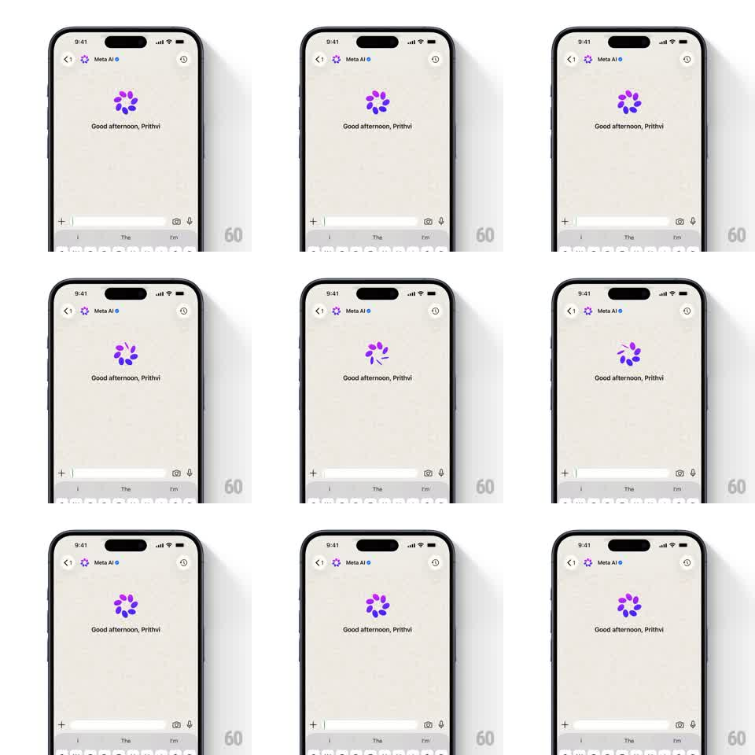

Media
Frame-by-frame

Rebuild this animation 1:1: WhatsApp's Meta AI idle - the circular gradient petal logo above the greeting loops through a staggered petal scale-and-rotate wave, like a flower slowly turning.

Rebuild this animation 1:1: WhatsApp's Meta AI idle - the circular gradient petal logo above the greeting loops through a staggered petal scale-and-rotate wave, like a flower slowly turning. ## Integration Integration: stack-agnostic spec - springs given as stiffness/damping, timed motions as duration + curve; map every value to your framework and animation library of choice. ## Scene Meta AI chat on warm off-white: header with back, avatar, "Meta AI" verified name, and icons; center stage the purple-blue gradient petal ring logo above "Good afternoon, Prithvi"; the composer bar at the bottom over a suggestion-chip keyboard area. ## Motion spec Pattern: staggered petal wave on the Meta AI ring logo. - ~10 petals form the ring; a wave travels around them: each petal scales 1 -> 0.55 -> 1 and rotates ~30 degrees, 500ms per petal, 60ms stagger, so the ring appears to spin and breathe. - The gradient hue drifts slowly across the ring (violet to blue and back, 6s). - The full loop repeats every ~2s with a brief rest at the formed state. - Greeting text and composer are static; the logo is the only motion. ## Calibration - The wave must travel continuously - no simultaneous pulsing of all petals. - Petals are rounded drops, glossy; the center stays empty. ## Reduced motion Logo holds static at full form with a faint opacity breathe (3s). ## Don't miss - The ring never fully closes - the petal gap pattern is part of the mark. - Gradient stays within petals; the background is untouched.